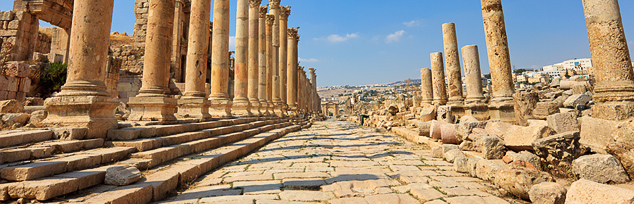

Jerash
Aclose second to Petra on the list of favourite destinations in Jordan, the ancient city of Jerash boasts an unbroken chain of human occupation dating back more than 6,500 years. The city's golden age came under Roman rule and the site is now generally acknowledged to be one of the best-preserved Roman provincial towns in the world.
Amman

A sprawling city spread over 19 hills, or "jebels," Amman is the modern - as well as the ancient - capital of the Hashemite Kingdom of Jordan.Known as Rabbath-Ammon during the Iron Age and later as Philadelphia, the ancient city that was once part of the Decapolis league, now boasts a population of around 2.3 million people.
Madaba

The trip south from Amman along the 5,000-year-old Kings Highway is one of the most memorable journeys in the Holy Land, passing through a string of ancient sites. The first city to encounter is Madaba, “the City of Mosaics." The city, best known for its spectacular Byzantine and Umayyad mosaics, is home to the famous
Petra

he ancient city of Petra is one of Jordan's national treasures and by far its best known tourist attraction. Located approximately three hours south of Amman, Petra is the legacy of the Nabataeans, an industrious Arab people who settled in southern Jordan more than 2,000 years ago.dmired then for its refined culture,
Aqaba

Famed for its preserved coral reefs and unique sea life, this Red Sea port city was, in ancient times, the main port for shipments from the Red Sea to the Far East. The Mameluk Fort, one of the main historical landmarks of Aqaba, rebuilt by the Mameluks in the 16th century. Square in shape and flanked by semicircular towers,